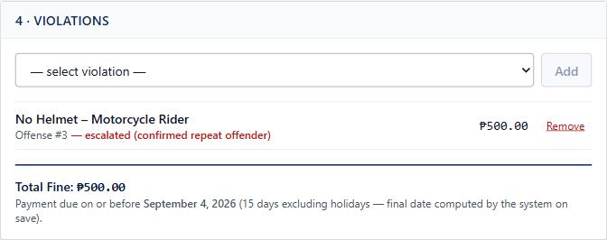
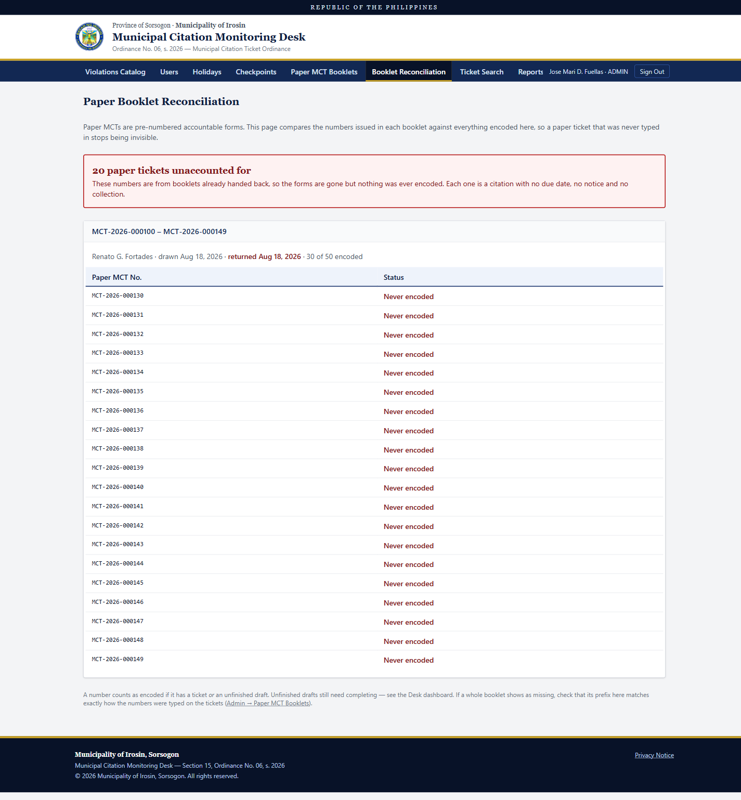
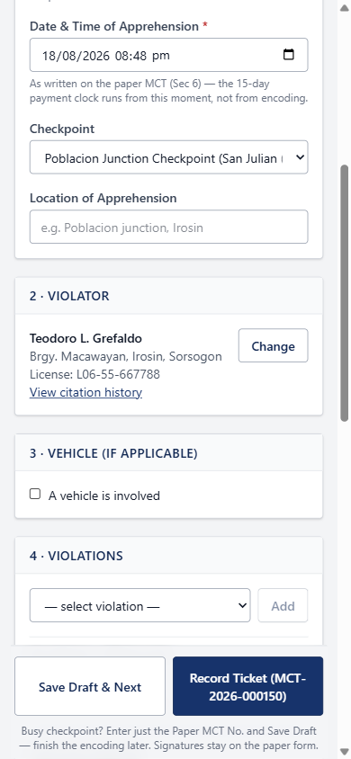
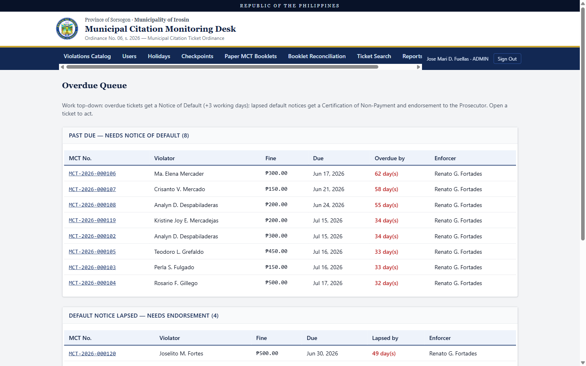
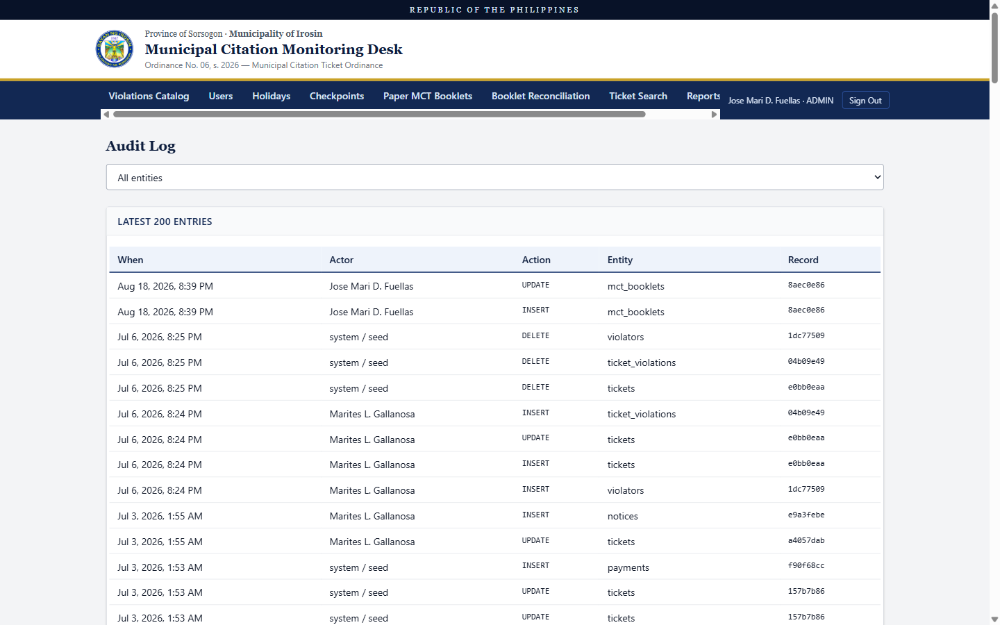

<meta charset="utf-8">
<meta name="robots" content="noindex, nofollow">
<title>Municipal Citation Monitoring Desk — Project Showcase</title>
<style>
  :root {
    --ink:        #14161b;
    --ink-2:      #565c66;
    --muted:      #878d97;
    --rule:       #d9dde3;
    --navy:       #17336b;
    --navy-900:   #0d1d3d;
    --navy-50:    #eef3fb;
    --gold:       #c9a227;
    --critical:   #b71c1c;
    --sans: system-ui, -apple-system, "Segoe UI", sans-serif;
    /* Chart fills are written as literal hex inside each <svg>, since SVG
       presentation attributes are the reliable path in print. The tier ramp
       #85a3da → #2f57a7 → #17336b is a validated ordinal ramp: one hue,
       monotone lightness, light end 2.55:1 on white. */
  }
  * { box-sizing: border-box; }
  body {
    margin: 0;
    font-family: Georgia, "Times New Roman", serif;
    font-size: 11.5pt; line-height: 1.6; color: var(--ink);
    background: #e4e6ea;
  }
  .page {
    background: #fff; width: 210mm; min-height: 297mm;
    padding: 20mm 20mm 16mm; margin: 8mm auto;
    box-shadow: 0 2px 12px rgba(0,0,0,.16);
    position: relative;
  }
  .page.dark { background: var(--navy-900); color: #fff; }

  h1 { font-size: 30pt; line-height: 1.12; margin: 0 0 .3em; color: #fff; letter-spacing: -.01em; }
  h2 { font-size: 17pt; color: var(--navy); margin: 0 0 .5em; line-height: 1.25; }
  h3 { font-size: 12.5pt; color: var(--navy-900); margin: 1.5em 0 .35em; }
  p  { margin: 0 0 .75em; }
  .lead { font-size: 13.5pt; line-height: 1.5; color: var(--ink-2); }
  .muted { color: var(--muted); }
  .small { font-size: 9.5pt; }

  /* act divider */
  .part-band {
    background: var(--navy-900); color: #fff; font-family: var(--sans);
    font-size: 8pt; font-weight: 700; letter-spacing: .16em; text-transform: uppercase;
    padding: 2mm 3mm; margin-bottom: 8mm;
    display: flex; gap: 4mm; align-items: baseline;
  }
  .part-band .pt { color: var(--gold); letter-spacing: .16em; }

  /* section opener */
  .opener { display: flex; align-items: baseline; gap: 10mm; margin-bottom: 1.1em; }
  .opener .num {
    font-family: var(--sans); font-size: 40pt; font-weight: 700;
    color: var(--navy-50); line-height: .8; letter-spacing: -.03em;
  }
  .opener .txt { flex: 1; }
  .opener h2 { margin: 0; }
  .opener .kicker {
    font-family: var(--sans); font-size: 8.5pt; font-weight: 600;
    letter-spacing: .12em; text-transform: uppercase; color: var(--gold); margin-bottom: .25em;
  }
  hr.gold { border: 0; border-top: 3px solid var(--gold); margin: 0 0 1.2em; }

  /* pull quote */
  .quote {
    font-size: 15pt; line-height: 1.42; color: var(--navy-900);
    border-left: 4px solid var(--gold); padding: .1em 0 .1em 6mm;
    margin: 1.3em 0; page-break-inside: avoid;
  }
  .quote.on-dark { color: #fff; border-left-color: var(--gold); }

  .note { border-left: 3px solid var(--navy); background: var(--navy-50);
          padding: .8em 1em; margin: 1.1em 0; page-break-inside: avoid; }
  .flag { border-left: 3px solid var(--critical); background: #fdf3f3;
          padding: .8em 1em; margin: 1.1em 0; page-break-inside: avoid; }
  .note p:last-child, .flag p:last-child { margin-bottom: 0; }

  /* stat tiles */
  .tiles { display: grid; grid-template-columns: repeat(4, 1fr); gap: 4mm; margin: 1.2em 0; }
  .tile { border: 1px solid var(--rule); border-top: 3px solid var(--navy); padding: 4mm; }
  .tile .v {
    font-family: var(--sans); font-size: 20pt; font-weight: 700;
    color: var(--navy-900); line-height: 1.05; margin-bottom: .15em;
  }
  .tile .v.crit { color: var(--critical); }
  .tile .l { font-family: var(--sans); font-size: 8pt; line-height: 1.35; color: var(--ink-2); }

  table { width: 100%; border-collapse: collapse; margin: 1em 0; font-size: 10pt; }
  th, td { text-align: left; padding: .45em .6em; border-bottom: 1px solid var(--rule); vertical-align: top; }
  th { background: var(--navy-50); color: var(--navy); }

  code, .mono { font-family: "Cascadia Mono", Consolas, monospace; font-size: 9.5pt; }
  pre { background: #14161b; color: #e9e9ee; padding: .9em 1em; font-size: 9pt;
        line-height: 1.5; overflow-x: auto; page-break-inside: avoid; }
  pre .ok { color: #7ddc7d; } pre .dim { color: #9a9aa8; }

  figure { margin: 1.1em 0; page-break-inside: avoid; }
  figure img { width: 100%; display: block; border: 1px solid var(--rule); }
  figcaption { font-family: var(--sans); font-size: 8.5pt; line-height: 1.45;
               color: var(--ink-2); margin-top: .5em; }

  /* chart chrome */
  .chart { margin: 1.2em 0; page-break-inside: avoid; }
  .chart-title { font-family: var(--sans); font-size: 10pt; font-weight: 600; color: var(--ink); margin-bottom: .15em; }
  .chart-sub { font-family: var(--sans); font-size: 8.5pt; color: var(--ink-2); margin-bottom: .7em; }
  .legend { font-family: var(--sans); font-size: 8.5pt; color: var(--ink-2);
            display: flex; gap: 6mm; flex-wrap: wrap; margin-top: .6em; }
  .legend span { display: inline-flex; align-items: center; gap: 2mm; }
  .sw { width: 10px; height: 10px; border-radius: 2px; display: inline-block; }

  ul, ol { margin: 0 0 .75em; padding-left: 1.3em; }
  li { margin-bottom: .38em; }

  .cover { display: flex; flex-direction: column; min-height: 257mm; }
  .cover .seal { width: 24mm; margin-bottom: 7mm; }
  .spacer { flex: 1; }
  .kv { display: grid; grid-template-columns: 40mm 1fr; gap: .35em 0;
        font-family: var(--sans); font-size: 9.5pt; }
  .kv dt { color: #97a3bd; } .kv dd { margin: 0; color: #fff; }

  @media print {
    body { background: #fff; }
    .page { width: auto; min-height: auto; margin: 0; padding: 0;
            box-shadow: none; page-break-after: always; }
    .page:last-child { page-break-after: auto; }
    .page.dark { padding: 14mm !important; }
    @page { size: A4; margin: 16mm 15mm; }
  }
</style>

<!-- ═══════════════ COVER ═══════════════ -->
<section class="page dark cover">
  <p class="small" style="font-family:var(--sans); margin-bottom:8mm">
    <a href="../../index.html" style="color:var(--gold); text-decoration:none">&larr; Karl Mercado &middot; Portfolio</a>
    &nbsp;&middot;&nbsp;
    <a href="mailto:komercado31@gmail.com" style="color:var(--gold); text-decoration:none">komercado31@gmail.com</a>
  </p>
  
  <p class="small" style="color:var(--gold); font-family:var(--sans); letter-spacing:.14em; text-transform:uppercase; margin-bottom:1.5em">
    Municipality of Irosin · Sorsogon
  </p>

  <h1>The paper ticket<br>is the law.<br>This is the<br>record book.</h1>

  <hr class="gold" style="margin:1.2em 0; max-width:60mm">

  <p class="lead" style="color:#c3cee4; max-width:120mm">
    A monitoring system for hand-written municipal traffic citations — built so the
    municipality can answer three questions a paper logbook cannot.
  </p>

  <div class="spacer"></div>

  <div style="display:grid; grid-template-columns:1fr 1fr 1fr; gap:6mm; margin-bottom:10mm">
    <div>
      <p style="font-family:var(--sans); font-size:15pt; font-weight:700; color:#fff; margin:0 0 .1em">Who still owes?</p>
      <p class="small" style="color:#97a3bd; margin:0">Searchable in seconds, not by hand.</p>
    </div>
    <div>
      <p style="font-family:var(--sans); font-size:15pt; font-weight:700; color:#fff; margin:0 0 .1em">Caught before?</p>
      <p class="small" style="color:#97a3bd; margin:0">Checked on exact identifiers only.</p>
    </div>
    <div>
      <p style="font-family:var(--sans); font-size:15pt; font-weight:700; color:var(--gold); margin:0 0 .1em">Any missing?</p>
      <p class="small" style="color:#97a3bd; margin:0">The question nobody was asking.</p>
    </div>
  </div>

  <dl class="kv">
    <dt>Prepared by</dt><dd>Karl Mercado</dd>
    <dt>Date</dt><dd>18 August 2026</dd>
    <dt>Repository</dt><dd>Private</dd>
    <dt>Status</dt><dd>Working prototype — not yet in production use</dd>
  </dl>

  <p class="small" style="color:#7c8aa6; margin-top:6mm; border-top:1px solid #2a3f6b; padding-top:3mm">
    Every screen in this document was captured from the running system on 18 August 2026
    against a seeded demonstration database. All names, licence numbers, receipt numbers and
    peso amounts are fictional. Fine amounts are placeholders — real amounts come from
    municipal ordinances and are entered by an administrator, never written into the code.
  </p>
</section>

<!-- ═══════════════ AT A GLANCE ═══════════════ -->
<section class="page">
  <div class="opener">
    <div class="txt">
      <div class="kicker">Case study</div>
      <h2>At a glance</h2>
    </div>
  </div>
  <hr class="gold">

  <div style="display:grid; grid-template-columns: 1fr 62mm; gap:9mm; align-items:start">
    <div>
      <h3 style="margin-top:0">The problem</h3>
      <p>
        The Municipality of Irosin issues traffic citations on pre-numbered paper forms that the
        Commission on Audit counts. The paper works as a ticket and fails as a record: nobody could
        say who still owed money, whether a driver was a repeat offender, or — worst — whether every
        ticket physically written had ever been recorded at all.
      </p>

      <h3>What I built</h3>
      <p>
        A web records system that sits <em>beside</em> the paper rather than replacing it. Every
        record is keyed to the number printed on the physical form. It computes payment deadlines,
        prices repeat offences from the ordinance's own fine tiers, produces the notices the
        ordinance requires, and reconciles each accountable booklet against what was actually
        encoded.
      </p>

      <h3>How it works</h3>
      <p>
        The rules live in the database, not the screens — access rights, fine totals, permitted
        status transitions and the audit trail are enforced in PostgreSQL, so they hold whether a
        request comes from the interface or around it. There is no application server; the browser
        talks to the database directly under row-level security.
      </p>
    </div>

    <div>
      <div style="border:1px solid var(--rule); border-top:3px solid var(--navy); padding:4mm">
        <dl style="font-family:var(--sans); font-size:9pt; margin:0; line-height:1.45">
          <dt style="color:var(--muted); margin-top:0">Role</dt>
          <dd style="margin:0 0 2.5mm"><strong>Sole developer</strong> — problem framing, database
            design, application, documentation</dd>

          <dt style="color:var(--muted)">Client context</dt>
          <dd style="margin:0 0 2.5mm">Municipality of Irosin, Sorsogon, under Ordinance No. 06,
            s. 2026</dd>

          <dt style="color:var(--muted)">Timeline</dt>
          <dd style="margin:0 0 2.5mm">3 July – 18 August 2026</dd>

          <dt style="color:var(--muted)">Stack</dt>
          <dd style="margin:0 0 2.5mm">React 18, TypeScript, Tailwind, Vite; PostgreSQL on Supabase.
            No application server.</dd>

          <dt style="color:var(--muted)">Scale</dt>
          <dd style="margin:0 0 2.5mm">~6,500 lines · 16 tables · 42 access policies · 13
            migrations</dd>

          <dt style="color:var(--muted)">Status</dt>
          <dd style="margin:0"><strong>Working prototype.</strong> Not in production; no real
            citation has been processed.</dd>
        </dl>
      </div>
    </div>
  </div>

  <h3>What is actually verified</h3>
  <p class="small muted" style="font-family:var(--sans)">
    Observed on 18 August 2026, running against a seeded demonstration database.
  </p>
  <table>
    <tr><th style="width:46%">Behaviour</th><th>Observed result</th></tr>
    <tr><td>Repeat-offence pricing</td>
        <td>Two prior citations found on a licence number; the third priced at the ₱500 tier instead
            of the ₱150 base, with the basis shown on screen.</td></tr>
    <tr><td>Working-day deadlines</td>
        <td>A notice issued Tuesday 18 August fell due Monday 24 August — the system skipped Friday
            the 21st (Ninoy Aquino Day) and the weekend.</td></tr>
    <tr><td>Booklet reconciliation</td>
        <td>A returned booklet of 50 forms with 30 encoded reported the 20 missing numbers
            individually.</td></tr>
    <tr><td>Separation of duties</td>
        <td>Marking a citation paid without a payment record is refused by the database itself:
            <span class="mono">permission denied for table tickets</span>.</td></tr>
    <tr><td>Build and tests</td>
        <td>8 of 8 automated tests pass; production build clean.</td></tr>
  </table>

  <div class="flag">
    <p class="small">
      <strong>What this document does not claim.</strong> There are no usage figures, no collection
      rates and no user-satisfaction scores, because the system has not been used by municipal staff
      or processed a real citation. Every number in this document describes the software's behaviour
      on demonstration data, never an outcome for the municipality.
    </p>
  </div>
</section>

<!-- ═══════════════ 1 · PROBLEM ═══════════════ -->
<section class="page">
  <div class="part-band"><span>Part one</span><span class="pt">The problem</span></div>
  <div class="opener">
    <div class="num">01</div>
    <div class="txt">
      <div class="kicker">The problem</div>
      <h2>A ticket book is a good ticket book<br>and a terrible record</h2>
    </div>
  </div>
  <hr class="gold">

  <p>
    When a traffic enforcer in Irosin stops someone, they write a ticket by hand. It comes from
    a pre-numbered government booklet, and the Commission on Audit counts every form. The driver
    keeps a copy. A carbon copy goes back to the municipal hall.
  </p>
  <p>
    The ordinance requires a monitoring desk. In practice the only record was a logbook — and a
    logbook cannot answer the questions the job actually needs answered.
  </p>

  <table>
    <tr><th style="width:52%">The question</th><th>What the logbook can do</th></tr>
    <tr><td><strong>Who still owes us money?</strong></td>
        <td>Answerable — by reading every page by hand, every time.</td></tr>
    <tr><td><strong>Has this person been caught before?</strong></td>
        <td>Only if somebody remembers. The ordinance charges more for repeat offences, so
            forgetting has a price.</td></tr>
    <tr><td><strong>Did every ticket we wrote get recorded?</strong></td>
        <td><strong>Not answerable at all.</strong> Nothing in a logbook can tell you about a
            ticket that never reached the logbook.</td></tr>
  </table>

  <p>
    That third question is the one nobody asks. An enforcer signs out a booklet of fifty numbered
    forms. They issue twenty. They write fifteen into the book. The other five citizens were told
    to pay a fine, and then nobody followed up — not through dishonesty, but because there was no
    way to notice.
  </p>

  <div class="quote">
    This is not a system that digitises tickets. It keeps track of paper tickets that already
    exist, and notices when one goes missing.
  </div>
</section>

<!-- ═══════════════ 2 · THE RULE ═══════════════ -->
<section class="page">
  <div class="opener">
    <div class="num">02</div>
    <div class="txt">
      <div class="kicker">The constraint</div>
      <h2>One rule shaped every decision</h2>
    </div>
  </div>
  <hr class="gold">

  <div class="quote" style="font-size:17pt; margin-top:0">
    The paper ticket is the legal document.<br>This system only monitors it.
  </div>

  <p>
    That was settled first, because getting it wrong would have made the whole project unusable.
    A municipality cannot stop using accountable government forms because someone wrote an app.
    The booklets are audited. The carbon copies are filed. Any system asking the LGU to trust a
    screen instead of the form would have been refused on day one — correctly.
  </p>

  <h3>What follows from it</h3>
  <table>
    <tr><th style="width:38%">Consequence</th><th>Why it has to be this way</th></tr>
    <tr><td>Every record carries the number printed on a physical ticket, and no two records
            can share one.</td>
        <td>That printed number is the only link between the record and the legal document.
            Without it, the record refers to nothing.</td></tr>
    <tr><td>The system never generates a ticket number.</td>
        <td>Numbers come from the pre-printed booklet. A generated number would be a second,
            competing identity for the same citation.</td></tr>
    <tr><td>Signatures are captured for reference, not as proof.</td>
        <td>The signature that counts legally is the one in ink on the form.</td></tr>
    <tr><td>If the app and the paper disagree, the paper wins.</td>
        <td>Which is exactly why an unrecorded paper ticket is treated as a serious problem
            rather than as an absence of data.</td></tr>
  </table>

  <p>
    The enforcer writes the paper ticket first, exactly as always, then types it in. Nothing about
    the roadside procedure changes.
  </p>
</section>

<!-- ═══════════════ 3 · BY THE NUMBERS ═══════════════ -->
<section class="page">
  <div class="part-band"><span>Part two</span><span class="pt">What I built</span></div>
  <div class="opener">
    <div class="num">03</div>
    <div class="txt">
      <div class="kicker">The answer</div>
      <h2>Three questions, answered</h2>
    </div>
  </div>
  <hr class="gold">

  <p class="small muted" style="font-family:var(--sans)">
    Figures below are from the seeded demonstration database as it stood on 18 August 2026.
    They show the system operating, not municipal performance.
  </p>

  <div class="tiles">
    <div class="tile"><div class="v">30</div><div class="l">citations recorded</div></div>
    <div class="tile"><div class="v crit">17</div><div class="l">still outstanding</div></div>
    <div class="tile"><div class="v crit">₱5,300</div><div class="l">unpaid, of ₱8,900 assessed</div></div>
    <div class="tile"><div class="v">8</div><div class="l">confirmed repeat offenders</div></div>
  </div>

  <h3>Who still owes money?</h3>
  <p>
    Every unpaid citation, ordered by how overdue it is, with a running total. The deadline is
    computed by the system from the time written on the paper ticket — fifteen days, holidays
    excluded.
  </p>

  <h3>Is this person a repeat offender?</h3>
  <p>
    Checked at the moment of encoding, so the higher fines the ordinance already requires
    actually get applied. How the system decides two records are the same person is the careful
    part — section 08.
  </p>

  <h3>Did every paper ticket get recorded?</h3>
  <p>
    The system knows which numbered booklet went to which enforcer. When the booklet comes back,
    anything with no record against it is listed by number — section 05.
  </p>

  <figure>
    
    <figcaption>
      The Monitoring Desk dashboard. Every figure is calculated from the citations themselves —
      nothing is typed in or maintained by hand. &ldquo;Overdue&rdquo; is worked out fresh each
      time the page is opened rather than stored, so there is no nightly job that can fail
      silently and leave the numbers stale.
    </figcaption>
  </figure>
</section>

<!-- ═══════════════ 4 · ESCALATION ═══════════════ -->
<section class="page">
  <div class="opener">
    <div class="num">04</div>
    <div class="txt">
      <div class="kicker">Pricing an offence</div>
      <h2>The fine goes up. The system<br>has to be sure why.</h2>
    </div>
  </div>
  <hr class="gold">

  <p>
    The ordinance charges more for a second or third offence. On paper, catching that depends on
    an enforcer remembering a face. Here the check runs the moment the violation is added.
  </p>

  <div class="chart">
    <div class="chart-title">Fine by offence number — No Helmet, Motorcycle Rider</div>
    <div class="chart-sub">Amounts held in the violations catalogue and maintained by an administrator. Demonstration placeholders.</div>
    <svg font-family="system-ui, -apple-system, sans-serif" viewBox="0 0 560 168" role="img" aria-label="Bar chart: first offence 150 pesos, second 300 pesos, third 500 pesos">
      <line x1="96" y1="150" x2="548" y2="150" stroke="#c3c2b7" stroke-width="1"/>
      <line x1="96" y1="104" x2="548" y2="104" stroke="#e6e8ec" stroke-width="1"/>
      <line x1="96" y1="58"  x2="548" y2="58"  stroke="#e6e8ec" stroke-width="1"/>
      <line x1="96" y1="12"  x2="548" y2="12"  stroke="#e6e8ec" stroke-width="1"/>

      <text x="88" y="153" text-anchor="end" font-size="9" fill="#878d97">₱0</text>
      <text x="88" y="107" text-anchor="end" font-size="9" fill="#878d97">₱200</text>
      <text x="88" y="61"  text-anchor="end" font-size="9" fill="#878d97">₱400</text>
      <text x="88" y="15"  text-anchor="end" font-size="9" fill="#878d97">₱600</text>

      <!-- 150 -> h=34.5 ; 300 -> h=69 ; 500 -> h=115 (scale: 600 => 138px) -->
      <rect x="130" y="115.5" width="96" height="34.5" rx="4" fill="#85a3da"/>
      <rect x="272" y="81"    width="96" height="69"   rx="4" fill="#2f57a7"/>
      <rect x="414" y="35"    width="96" height="115"  rx="4" fill="#17336b"/>

      <text x="178" y="108" text-anchor="middle" font-size="11" font-weight="700" fill="#14161b">₱150</text>
      <text x="320" y="73"  text-anchor="middle" font-size="11" font-weight="700" fill="#14161b">₱300</text>
      <text x="462" y="27"  text-anchor="middle" font-size="11" font-weight="700" fill="#14161b">₱500</text>

      <text x="178" y="164" text-anchor="middle" font-size="9" fill="#565c66">1st offence</text>
      <text x="320" y="164" text-anchor="middle" font-size="9" fill="#565c66">2nd offence</text>
      <text x="462" y="164" text-anchor="middle" font-size="9" fill="#565c66">3rd offence</text>
    </svg>
  </div>

  <figure>
    
    <figcaption>
      A real result from the demonstration data, not a mock-up. The system found two previous
      No-Helmet citations against this licence number, priced the new one as a third offence and
      said so on screen: ₱500 against a ₱150 first-offence rate. The enforcer told it none of
      that — they selected the violation and it answered.
    </figcaption>
  </figure>

  <p>
    The wording matters. It says <em>confirmed repeat offender</em>, and <em>confirmed</em> is
    doing real work — section 08.
  </p>
</section>

<!-- ═══════════════ 5 · RECONCILIATION ═══════════════ -->
<section class="page">
  <div class="opener">
    <div class="num">05</div>
    <div class="txt">
      <div class="kicker">The unasked question</div>
      <h2>Twenty tickets that existed<br>only on paper</h2>
    </div>
  </div>
  <hr class="gold">

  <p>
    An enforcer signs out a booklet of fifty pre-numbered forms. Thirty were encoded into the
    system. The booklet came back. Here is the whole booklet, one square per form.
  </p>

  <div class="chart">
    <div class="chart-title">Booklet MCT-2026-000100 – 000149, after return</div>
    <div class="chart-sub">One square per pre-numbered form. Demonstration data.</div>
    <svg font-family="system-ui, -apple-system, sans-serif" viewBox="0 0 560 182" role="img" aria-label="Grid of fifty squares, one per pre-numbered form: thirty encoded, twenty never encoded">
      <!-- 10 per row, 5 rows. Rows 1-3 encoded (30); rows 4-5 never encoded (20). -->
      <!-- One 52×34 tile per form; three rows encoded, two rows never encoded. -->
      <defs>
        <pattern id="cell-ok" x="8" y="8" width="52" height="34" patternUnits="userSpaceOnUse">
          <rect width="44" height="26" rx="3" fill="#d8dce4"/>
        </pattern>
        <pattern id="cell-gap" x="8" y="8" width="52" height="34" patternUnits="userSpaceOnUse">
          <rect width="44" height="26" rx="3" fill="#b71c1c"/>
        </pattern>
      </defs>
      <rect x="8" y="8"   width="512" height="94" fill="url(#cell-ok)"/>
      <rect x="8" y="110" width="512" height="60" fill="url(#cell-gap)"/>
      <text x="530" y="26"  font-size="9" fill="#878d97">000100</text>
      <text x="530" y="162" font-size="9" fill="#878d97">000149</text>
    </svg>
    <div class="legend">
      <span><i class="sw" style="background:#d8dce4"></i> 30 encoded — a citation exists</span>
      <span><i class="sw" style="background:#b71c1c"></i> 20 never encoded — form issued, no record</span>
    </div>
  </div>

  <p>
    Those twenty are not in any report, any total, or any overdue queue. Twenty people were told
    to pay a fine and were never followed up. In a logbook, this page does not exist.
  </p>

  <figure>
    
    <figcaption>
      The system's own reconciliation screen, listing each unaccounted number individually. A
      booklet still in the field is treated differently from one handed back: leftovers in a
      returned booklet are forms that reached citizens and were never recorded. Both dates read
      18 August because the booklet was recorded while these screenshots were being captured; in
      use, a booklet is drawn weeks before it is returned.
    </figcaption>
  </figure>

  <p class="small muted">
    This is the part of the system nobody asked for. It came from noticing that the monitoring
    desk could be working perfectly and still be blind to its largest source of lost revenue.
  </p>
</section>

<!-- ═══════════════ 6 · DEADLINES ═══════════════ -->
<section class="page">
  <div class="opener">
    <div class="num">06</div>
    <div class="txt">
      <div class="kicker">Deadlines</div>
      <h2>Three working days,<br>counted properly</h2>
    </div>
  </div>
  <hr class="gold">

  <p>
    When a citation goes unpaid past its deadline, the Desk issues a Notice of Default, which
    grants three further working days. Getting that arithmetic right matters: the date on this
    document is served on a citizen and starts a legal clock.
  </p>
  <p>
    A notice issued on Tuesday 18 August 2026 did not fall due on Friday the 21st.
  </p>

  <div class="chart">
    <div class="chart-title">Counting three working days from 18 August 2026</div>
    <div class="chart-sub">Produced by the system, not worked out by hand.</div>
    <svg font-family="system-ui, -apple-system, sans-serif" viewBox="0 0 560 118" role="img" aria-label="Calendar strip showing three working days counted from 18 August, skipping a holiday and the weekend, ending 24 August">
      <!-- 7 cells -->
      <g>
        <!-- Tue 18 : issued -->
        <rect x="6" y="26" width="72" height="52" rx="4" fill="#17336b"/>
        <text x="42" y="20" text-anchor="middle" font-size="8.5" fill="#878d97">Tue</text>
        <text x="42" y="50" text-anchor="middle" font-size="14" font-weight="700" fill="#fff">18</text>
        <text x="42" y="66" text-anchor="middle" font-size="7.5" fill="#c3cee4">issued</text>

        <!-- Wed 19 : day 1 -->
        <rect x="86" y="26" width="72" height="52" rx="4" fill="#85a3da"/>
        <text x="122" y="20" text-anchor="middle" font-size="8.5" fill="#878d97">Wed</text>
        <text x="122" y="50" text-anchor="middle" font-size="14" font-weight="700" fill="#14161b">19</text>
        <text x="122" y="66" text-anchor="middle" font-size="7.5" fill="#14161b">day 1</text>

        <!-- Thu 20 : day 2 -->
        <rect x="166" y="26" width="72" height="52" rx="4" fill="#85a3da"/>
        <text x="202" y="20" text-anchor="middle" font-size="8.5" fill="#878d97">Thu</text>
        <text x="202" y="50" text-anchor="middle" font-size="14" font-weight="700" fill="#14161b">20</text>
        <text x="202" y="66" text-anchor="middle" font-size="7.5" fill="#14161b">day 2</text>

        <!-- Fri 21 : holiday, skipped -->
        <rect x="246" y="26" width="72" height="52" rx="4" fill="#fdf6e3" stroke="#c9a227" stroke-width="1.5"/>
        <text x="282" y="20" text-anchor="middle" font-size="8.5" fill="#878d97">Fri</text>
        <text x="282" y="48" text-anchor="middle" font-size="14" font-weight="700" fill="#7a6110">21</text>
        <text x="282" y="60" text-anchor="middle" font-size="6.8" fill="#7a6110">Ninoy Aquino Day</text>
        <text x="282" y="70" text-anchor="middle" font-size="6.8" fill="#7a6110">skipped</text>

        <!-- Sat 22 -->
        <rect x="326" y="26" width="72" height="52" rx="4" fill="#f2f3f5" stroke="#d9dde3"/>
        <text x="362" y="20" text-anchor="middle" font-size="8.5" fill="#878d97">Sat</text>
        <text x="362" y="50" text-anchor="middle" font-size="14" font-weight="700" fill="#878d97">22</text>
        <text x="362" y="66" text-anchor="middle" font-size="7.5" fill="#878d97">weekend</text>

        <!-- Sun 23 -->
        <rect x="406" y="26" width="72" height="52" rx="4" fill="#f2f3f5" stroke="#d9dde3"/>
        <text x="442" y="20" text-anchor="middle" font-size="8.5" fill="#878d97">Sun</text>
        <text x="442" y="50" text-anchor="middle" font-size="14" font-weight="700" fill="#878d97">23</text>
        <text x="442" y="66" text-anchor="middle" font-size="7.5" fill="#878d97">weekend</text>

        <!-- Mon 24 : day 3, due -->
        <rect x="486" y="26" width="72" height="52" rx="4" fill="#17336b"/>
        <text x="522" y="20" text-anchor="middle" font-size="8.5" fill="#878d97">Mon</text>
        <text x="522" y="50" text-anchor="middle" font-size="14" font-weight="700" fill="#fff">24</text>
        <text x="522" y="66" text-anchor="middle" font-size="7.5" fill="#e8cf7a">day 3 · due</text>

        <text x="6" y="98" font-size="8.5" fill="#565c66">Two of the seven calendar days in between do not count as working days, and one is a national holiday.</text>
        <text x="6" y="111" font-size="8.5" fill="#565c66">The holiday calendar is maintained by an administrator, so a local fiesta can be added the same way.</text>
      </g>
    </svg>
  </div>

  <figure>
    
    <figcaption>
      The Notice of Default as generated for printing and service. The citation number, issue
      date, lapsed due date, violation and amount are all drawn from the record rather than
      retyped — a served legal document should not depend on a clerk copying figures correctly.
    </figcaption>
  </figure>
</section>

<!-- ═══════════════ 7 · FIELD ═══════════════ -->
<section class="page">
  <div class="opener">
    <div class="num">07</div>
    <div class="txt">
      <div class="kicker">Where it is used</div>
      <h2>Outdoors, one-handed,<br>with cars waiting</h2>
    </div>
  </div>
  <hr class="gold">

  <p>
    The enforcer is standing at a roadside checkpoint on a phone. That constraint drove this
    screen more than anything else.
  </p>

  <div style="display:grid; grid-template-columns: 62mm 1fr; gap:8mm; align-items:start">
    <figure style="margin:0">
      
    </figure>
    <div>
      <h3 style="margin-top:0">Reachable one-handed</h3>
      <p class="small">
        The two actions stay pinned to the bottom of the screen, and the record button names the
        ticket number being saved — so it can be checked against the paper in the other hand.
      </p>
      <h3>The busy-checkpoint case</h3>
      <p class="small">
        Sometimes there is no time to type a full record. Entering just the printed ticket number
        and pressing <strong>Save Draft &amp; Next</strong> is enough; the Desk completes the
        encoding later from the carbon copy.
      </p>
      <h3>When the signal drops</h3>
      <p class="small">
        A draft saved with no connection waits on the device and sends itself when signal returns.
      </p>
    </div>
  </div>

  <div class="flag">
    <p class="small">
      <strong>Stated plainly:</strong> that is the only part of the system that works offline.
      Recording payments, issuing notices and running reports all need a connection. This is not
      an offline application and is not described as one.
    </p>
  </div>

  <figure>
    
    <figcaption>
      Back at the Desk: the overdue queue, ordered by the action required — citations needing a
      Notice of Default first, then notices that have themselves lapsed and need endorsement to
      the prosecutor, then those still inside the grace period.
    </figcaption>
  </figure>
</section>

<!-- ═══════════════ 8 · IDENTITY ═══════════════ -->
<section class="page">
  <div class="part-band"><span>Part three</span><span class="pt">How it works</span></div>
  <div class="opener">
    <div class="num">08</div>
    <div class="txt">
      <div class="kicker">The careful part</div>
      <h2>Deciding that two records<br>are the same person</h2>
    </div>
  </div>
  <hr class="gold">

  <p>
    A repeat offence costs more, so a wrong match overcharges a real person. That makes identity
    matching a money question, not a convenience question.
  </p>
  <p>
    The system counts a repeat only on an exact match of licence number, vehicle plate or
    franchise number. It ignores capitalisation and punctuation, so
    <span class="mono">N01-12-345678</span> and <span class="mono">n01 12 345678</span> are
    correctly one plate — a driver should not get a cheaper fine because a different officer used
    spaces instead of dashes.
  </p>

  <p><strong>But that fix creates a problem of its own, and the problem is the interesting part.</strong></p>

  <div class="flag">
    <p>
      Driving without a licence is itself an offence here, so the licence box gets filled in with
      a word — <span class="mono">none</span>, <span class="mono">n/a</span>,
      <span class="mono">wala</span>. Strip the punctuation and two completely unrelated people
      collapse into the same identifier. The second unlicensed driver stopped that month would
      have been charged a repeat-offender fine for a stranger's history.
    </p>
  </div>

  <div class="quote">
    So the rule is: an identifier with no digit in it identifies nobody.
  </div>

  <p>
    Every real licence, plate and franchise number contains a digit. The words people write when
    there is no licence do not.
  </p>
  <p>
    There is a cost, accepted deliberately: a genuine personalised plate with no digits will not
    be recognised, and that driver is priced as a first offender. The system errs toward
    undercharging, because the alternative is billing somebody for another person's record.
  </p>

  <figure>
    
    <figcaption>
      The same logic across the whole dataset — eight confirmed. The third row was matched on a
      vehicle plate rather than a licence. Note the sentence the system prints above the table:
      it refuses to count similar names, and tells the person reading the report that it refuses.
    </figcaption>
  </figure>

  <p class="small muted">
    Similar names and addresses are still shown — on a separate screen, labelled unconfirmed, for
    a person to judge. They are never counted toward a fine automatically.
  </p>
</section>

<!-- ═══════════════ 9 · MONEY PATH ═══════════════ -->
<section class="page">
  <div class="opener">
    <div class="num">09</div>
    <div class="txt">
      <div class="kicker">Public money</div>
      <h2>Whoever writes the ticket<br>never takes the payment</h2>
    </div>
  </div>
  <hr class="gold">

  <p>
    Fines are public money, audited by COA. Two controls matter more than any feature.
  </p>

  <h3>Separation of duties</h3>
  <p>
    An enforcer cannot record a payment — at all. The officer who issues a citation is never the
    person who records its collection. Treasury issues the paper receipt exactly as it does today
    and types the receipt number in. Payment must be for the full amount, because the ordinance
    does not allow a partial one. A receipt number cannot be used twice, and a citation cannot be
    paid twice.
  </p>

  <h3>The rules live underneath the screens</h3>
  <p>
    Access rights, fine totals, permitted status transitions and the audit log are enforced inside
    the database, not in the interface. Hiding a button stops an honest person from making a
    mistake; it does not stop anyone who reaches the data another way. Putting the rules
    underneath means the answer is the same either way.
  </p>

  <div class="note">
    <p class="small">
      <strong>Checked, not asserted.</strong> Signed in as an ordinary staff account, an attempt
      to mark a citation paid without going through the payment record is refused by the database
      itself — <span class="mono">permission denied for table tickets</span>. Recording a payment
      normally still works, and still marks the citation paid.
    </p>
  </div>

  <div class="flag">
    <p>
      <strong>And it was broken until this month.</strong> Two earlier attempts to impose that
      restriction had no effect. Both were written as column-level revocations, which in
      PostgreSQL cannot reduce a table-wide privilege already held. Both were accepted without
      error and appeared to succeed. It was found while preparing this document, fixed on
      18 August 2026, and the fix now refuses to report success unless it can prove the
      restriction is actually in force.
    </p>
  </div>

  <p>
    That is included deliberately. A system's real condition is better shown by the faults it
    found in itself than by a claim that everything works.
  </p>

  <figure>
    
    <figcaption>
      Every change to a citation, payment, fine amount or staff account is written to an audit log
      with who did it and when. It is the answer to the auditor's question, and the reason staff
      who leave are deactivated rather than deleted — their past citations have to stay intact.
    </figcaption>
  </figure>
</section>

<!-- ═══════════════ 10 · PRIVACY ═══════════════ -->
<section class="page">
  <div class="opener">
    <div class="num">10</div>
    <div class="txt">
      <div class="kicker">Privacy</div>
      <h2>Rules that hold even when<br>somebody forgets</h2>
    </div>
  </div>
  <hr class="gold">

  <p>
    The system holds names, addresses, licence numbers and photographs of members of the public,
    which puts it under the Data Privacy Act. Some rules were built in rather than left to policy.
  </p>

  <table>
    <tr><th style="width:40%">Rule</th><th>How it is held</th></tr>
    <tr><td><strong>Minors are never photographed</strong></td>
        <td>Not &ldquo;the button is hidden&rdquo; — the database refuses to store a photograph
            against a record marked as a minor, and refuses the citation entirely unless a
            guardian is recorded as the liable party. Whether someone is a minor is worked out
            from their birthdate, not from a checkbox somebody might forget to tick.</td></tr>
    <tr><td>Photographs are not public</td>
        <td>Held in private storage, reachable only through links that expire after sixty
            seconds. There is no address you can share that shows someone's photo.</td></tr>
    <tr><td>Nothing personal in a web address</td>
        <td>Page addresses carry meaningless identifiers, so a screenshot of a browser or a line
            in a server log does not reveal who a citation was for.</td></tr>
    <tr><td>Every change is recorded</td>
        <td>With the acting account and a timestamp.</td></tr>
    <tr><td>Fine amounts are never in the code</td>
        <td>They come from the ordinances and are entered by an administrator. If the Sanggunian
            amends an amount, nobody needs a developer.</td></tr>
  </table>

  <figure>
    
    <figcaption>
      The violations catalogue. Every amount shown is a placeholder awaiting the real figures
      from the ordinances.
    </figcaption>
  </figure>

  <p class="small muted">
    Outstanding: a formal retention schedule, National Privacy Commission registration, a Data
    Protection Officer and a privacy impact assessment are matters for the municipality and have
    not been undertaken as part of this work.
  </p>
</section>

<!-- ═══════════════ 11 · BUILD ═══════════════ -->
<section class="page">
  <div class="opener">
    <div class="num">11</div>
    <div class="txt">
      <div class="kicker">How it is built</div>
      <h2>Six thousand lines,<br>a quarter of them rules</h2>
    </div>
  </div>
  <hr class="gold">

  <p>
    A web application running in a browser, with a PostgreSQL database. Nothing to install on a
    municipal PC. About 6,500 lines, of which roughly 1,700 are database rules rather than screen
    code — 16 tables, 2 derived views and 42 access-control policies.
  </p>

  <div class="tiles">
    <div class="tile"><div class="v">16</div><div class="l">database tables</div></div>
    <div class="tile"><div class="v">42</div><div class="l">access-control policies</div></div>
    <div class="tile"><div class="v">13</div><div class="l">schema migrations</div></div>
    <div class="tile"><div class="v">28</div><div class="l">commits, Jul–Aug 2026</div></div>
  </div>

  <h3>What runs today</h3>
  <pre><span class="dim">$</span> npm test
<span class="ok">#</span> tests 8   <span class="ok">#</span> pass 8   <span class="ok">#</span> fail 0

<span class="dim">$</span> npm run build
<span class="dim">✓</span> 152 modules transformed
<span class="ok">✓</span> built in 4.88s</pre>
  <p class="small muted">
    The eight tests cover the two calculations that would cost a citizen money if wrong: how
    identifiers are compared for repeat offences, and how deadlines are counted around weekends
    and holidays.
  </p>

  <h3>How it was actually built</h3>
  <div class="chart">
    <svg font-family="system-ui, -apple-system, sans-serif" viewBox="0 0 560 96" role="img" aria-label="Development timeline from July to August 2026">
      <g>
        <line x1="14" y1="40" x2="546" y2="40" stroke="#d9dde3" stroke-width="2"/>
        <circle cx="40"  cy="40" r="6" fill="#17336b"/>
        <circle cx="170" cy="40" r="6" fill="#17336b"/>
        <circle cx="320" cy="40" r="6" fill="#b71c1c"/>
        <circle cx="440" cy="40" r="6" fill="#17336b"/>
        <circle cx="524" cy="40" r="6" fill="#b71c1c"/>

        <text x="40"  y="26" text-anchor="middle" font-size="8.5" font-weight="700" fill="#14161b">3 Jul</text>
        <text x="170" y="26" text-anchor="middle" font-size="8.5" font-weight="700" fill="#14161b">6 Jul</text>
        <text x="320" y="26" text-anchor="middle" font-size="8.5" font-weight="700" fill="#14161b">28–29 Jul</text>
        <text x="440" y="26" text-anchor="middle" font-size="8.5" font-weight="700" fill="#14161b">4 Aug</text>
        <text x="524" y="26" text-anchor="middle" font-size="8.5" font-weight="700" fill="#14161b">18 Aug</text>

        <text x="40"  y="58" text-anchor="middle" font-size="7.5" fill="#565c66">schema, app,</text>
        <text x="40"  y="68" text-anchor="middle" font-size="7.5" fill="#565c66">first audit</text>
        <text x="170" y="58" text-anchor="middle" font-size="7.5" fill="#565c66">ordinance fixes,</text>
        <text x="170" y="68" text-anchor="middle" font-size="7.5" fill="#565c66">drafts</text>
        <text x="320" y="58" text-anchor="middle" font-size="7.5" fill="#8f1414">money-path audit,</text>
        <text x="320" y="68" text-anchor="middle" font-size="7.5" fill="#8f1414">reconciliation, docs</text>
        <text x="440" y="58" text-anchor="middle" font-size="7.5" fill="#565c66">identity</text>
        <text x="440" y="68" text-anchor="middle" font-size="7.5" fill="#565c66">matching</text>
        <text x="524" y="58" text-anchor="middle" font-size="7.5" fill="#8f1414">revokes fixed,</text>
        <text x="524" y="68" text-anchor="middle" font-size="7.5" fill="#8f1414">cleanup</text>

        <text x="14" y="90" font-size="8" fill="#878d97">Red markers are the dates a fault was found in the system's own money path and corrected.</text>
      </g>
    </svg>
  </div>

  <h3>Written down for whoever comes next</h3>
  <p>
    The repository carries an orientation document for developers, a guide for the staff who would
    use it, a presentation guide, and a written audit of the system's own weaknesses including the
    ones still open. A companion <strong>System Documentation</strong> covers the same system
    formally for the municipality: objectives, scope, architecture and data model, business rules,
    privacy measures, verification results and technical requirements.
  </p>

  <hr style="border:0; border-top:1px solid var(--rule); margin:1.4em 0">
  <p class="small muted">
    Municipal Citation Monitoring Desk · Municipality of Irosin, Sorsogon · Ordinance No. 06,
    s. 2026. Prepared 18 August 2026. Screenshots from a seeded demonstration database; all
    personal details and amounts are fictional.
  </p>
</section>
<!-- ═══════════════ 12 · LIMITS ═══════════════ -->
<section class="page">
  <div class="part-band"><span>In closing</span><span class="pt">The honest accounting</span></div>
  <div class="opener">
    <div class="num">12</div>
    <div class="txt">
      <div class="kicker">Limits</div>
      <h2>What it does not do yet</h2>
    </div>
  </div>
  <hr class="gold">

  <p>
    A working prototype, not a finished product in daily use. These are the limits, so everything
    above can be read for exactly what it claims.
  </p>

  <table>
    <tr><th style="width:38%">Limitation</th><th>Detail</th></tr>
    <tr><td><strong>No way to correct a mistyped ticket or receipt number</strong></td>
        <td>Currently a permanent mistake that has to be handled outside the system. The most
            important thing still missing.</td></tr>
    <tr><td>Not yet in production</td>
        <td>It has not processed a real citation. Every figure here is demonstration data.</td></tr>
    <tr><td>No user acceptance testing</td>
        <td>Municipal staff have not used it. Usability under real counter and checkpoint
            conditions is unverified.</td></tr>
    <tr><td>Fine amounts are placeholders</td>
        <td>Real amounts must be entered from the ordinances before use.</td></tr>
    <tr><td>Offline support is partial</td>
        <td>Draft capture only.</td></tr>
    <tr><td>No SMS, no online payment</td>
        <td>Ruled out of scope for this version rather than half-built.</td></tr>
    <tr><td>A minor's guardian is not named on the printed notice</td>
        <td>Recorded as liable party, but does not appear on the served document.</td></tr>
    <tr><td>Reports are calculated in the browser</td>
        <td>Fine at municipal scale; would need rework at provincial scale.</td></tr>
    <tr><td>Automated testing is thin</td>
        <td>Eight tests, covering the two calculations where an error would misprice a fine or
            miscount a deadline. The rest is checked by hand.</td></tr>
    <tr><td>Encoding is not one transaction</td>
        <td>Several successive writes; an interruption partway can leave an incomplete record.</td></tr>
  </table>

  <div class="quote">
    Volunteering a limitation builds more trust than defending one.
  </div>

  <hr class="gold">
  <p class="small" style="font-family:var(--sans)">
    Built by Karl Mercado &mdash; sole developer.
    <a href="../../index.html" style="color:var(--gold); text-decoration:none">Back to portfolio</a>
    &nbsp;&middot;&nbsp;
    <a href="mailto:komercado31@gmail.com" style="color:var(--gold); text-decoration:none">komercado31@gmail.com</a>
    &nbsp;&middot;&nbsp;
    <a href="https://github.com/KMercad0" style="color:var(--gold); text-decoration:none">github.com/KMercad0</a>
  </p>
</section>

